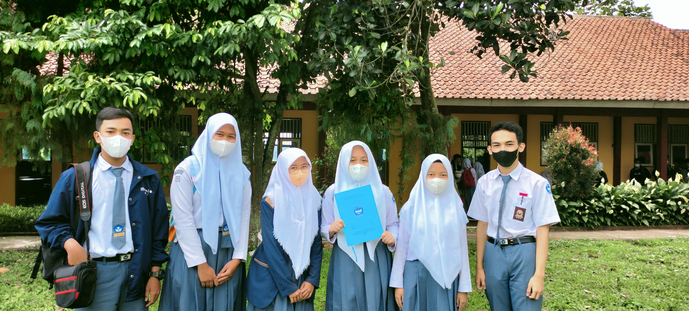
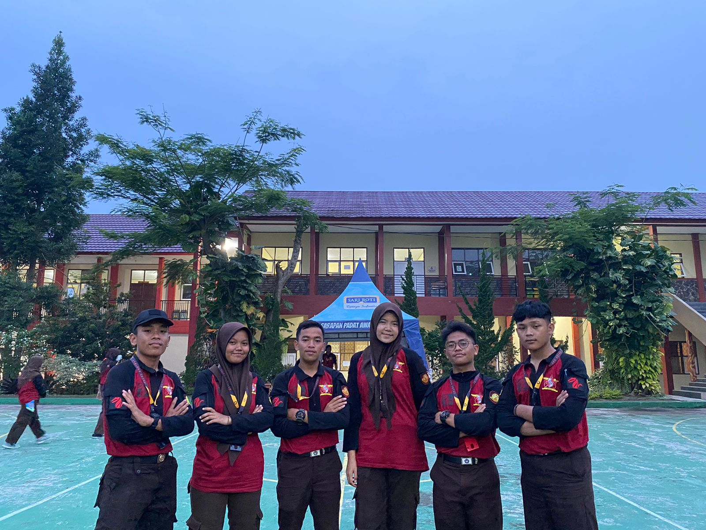
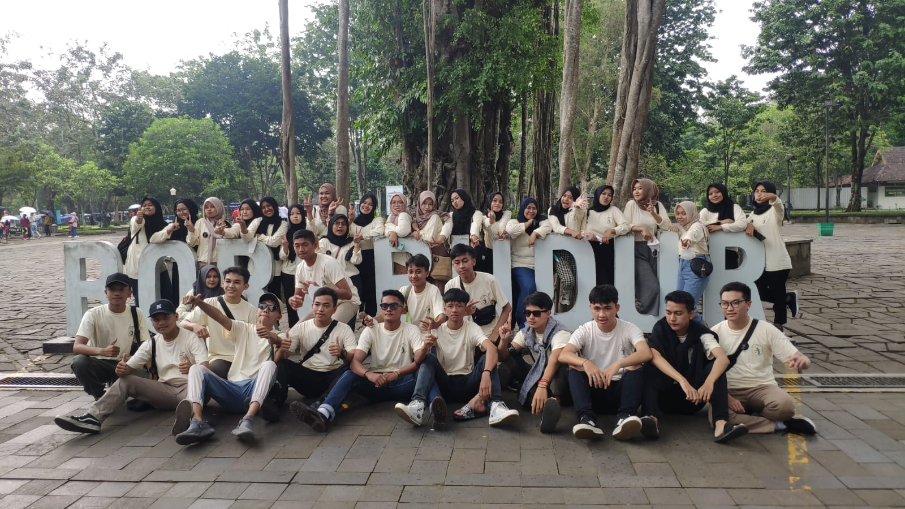
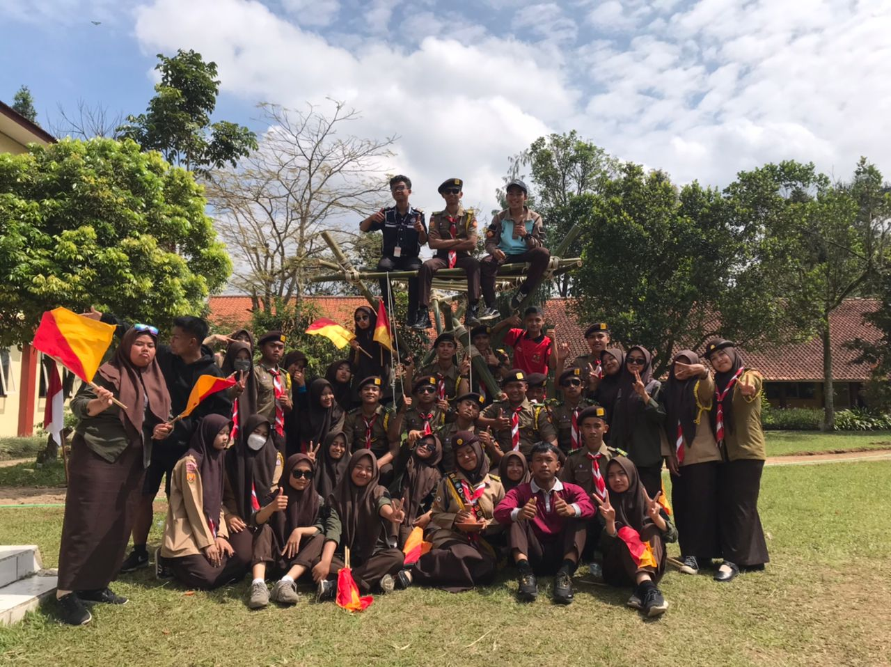
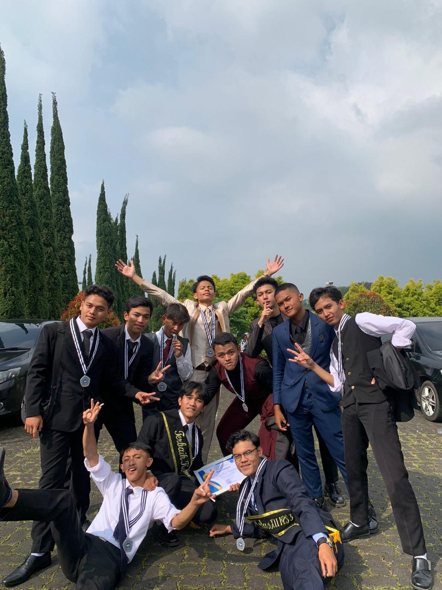
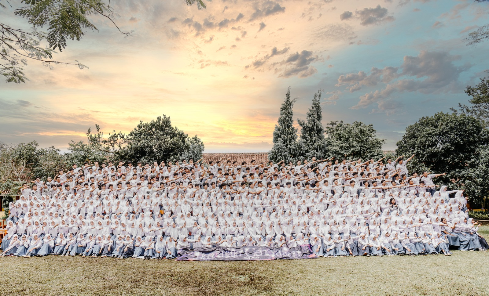

01
Kehidupan Kelas

Suasana belajar di kelas IPA

Diskusi kelompok pelajaran

Belajar di perpustakaan sekolah
02
Kegiatan & Event

Event & kegiatan sekolah

Upacara bendera bersama

Foto bersama teman kelas

Kegiatan ekstrakurikuler
03
Momen Spesial

Momen kelulusan & wisuda SMA

Kenangan kelas terakhir
Tambahkan foto asli kamu ke folder assets/ dan ganti path foto di gallery-sman.html